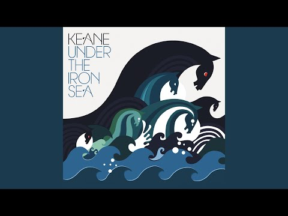

Hopes and Fears (Esperanzas y Miedos en español) es el primer álbum de la banda inglesa Keane, lanzado el 10 de mayo de 2004. Llegó al número uno en las listas desde su lanzamiento y ha acumulado ocho discos de platino.
Under the Iron Sea es el segundo álbum de estudio de la banda inglesa Keane, lanzado el 12 de junio de 2006. Durante su primera semana a la venta en el Reino Unido, el álbum abrió en el número uno, vendiendo 222.297 copias según las cifras de la Official Chart Company.
Perfect Symmetry (Simetría Perfecta en español), es el tercer álbum de estudio de la banda británica de rock alternativo Keane. Fue publicado el 13 de octubre de 2008 El título del álbum fue anunciado el 31 de julio del mismo año.
Strangeland (Tierra Extraña) es el cuarto álbum de estudio de la banda británica de rock alternativo Keane. Fue publicado el 7 de mayo de 2012. Fue directo al número 1 de las listas británicas tras su lanzamiento.
Cause and Effect es el quinto álbum de estudio de la banda inglesa de rock alternativo Keane, lanzado el 20 de septiembre de 2019 a través de Island Records. [1] Es su primer álbum de larga duración desde Strangeland (2012) y una pausa desde principios de 2014 hasta finales de 2018. [2] Cause and Effect alcanzó el puesto número 2 en la lista de álbumes del Reino Unido